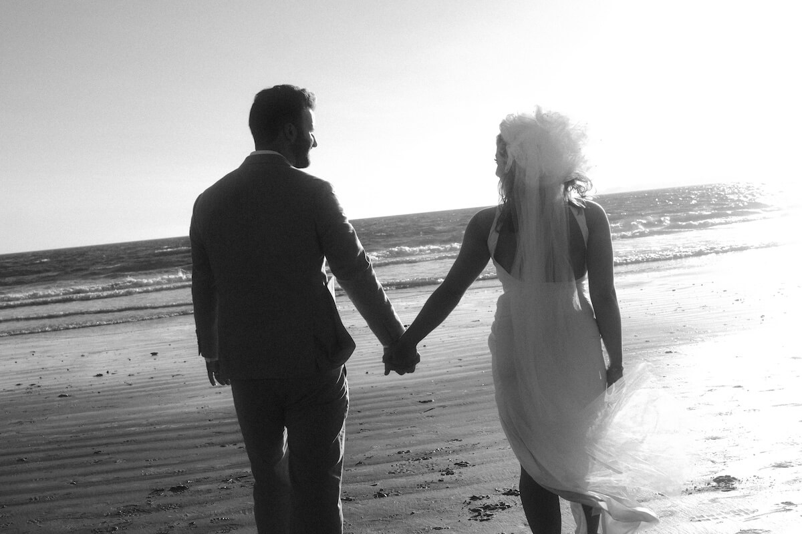
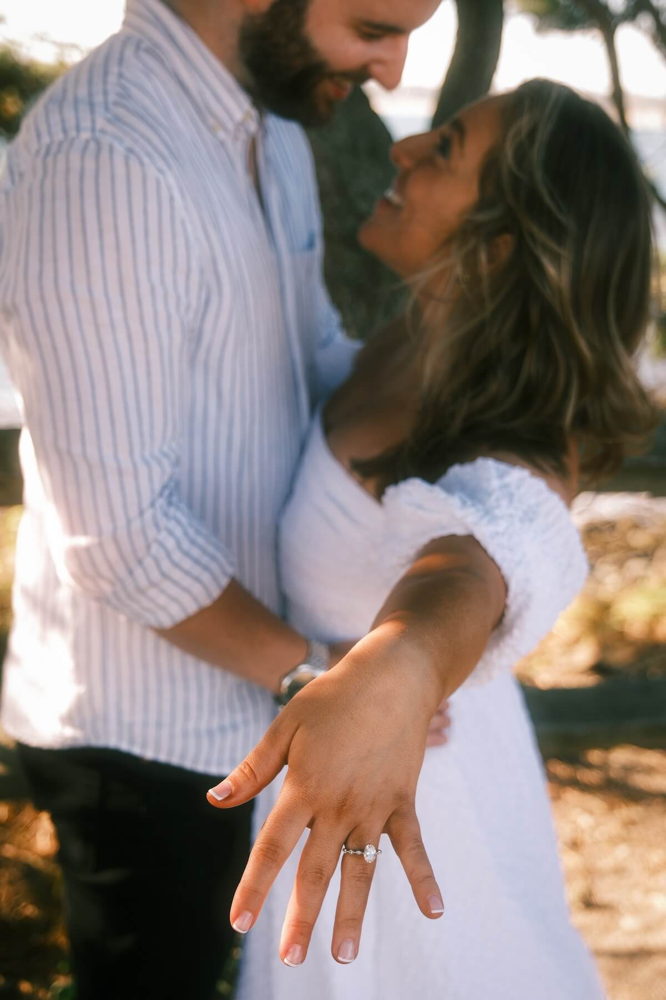

Our Story
As two people who spend many nights conversing about life's unique circumstances that brought them to where they are, our origin story has always been a special embodiment of just that. Two people came together on a night that was likely to have never occurred, yet resulted in sharing more similarities than each thought possible.
The story begins on September 17, 2022 in a drunken haze on the fine fields of the Xfinity Center in Mansfield, where each of us arrived with our independent friend groups for a country concert and sought out a place to camp for the show. From there, things got interesting.
Ben's Side
After an initial spot on the lawn being inundated with teenagers, the young geezer I am urged the group to move somewhere else. After pacing a few tens of yards over to a new area, I laid down a blanket only to find Sam looking at me precisely as I looked back up. Her eyes were full of curiosity and I immediately felt something new awaken inside me. As I scrambled to come up with something better than "hi," she beat me to it with "are you of age?"
Immediately I laughed and with the ice broken, the conversation built into discovering we both arrived at the concert on a whim, have the same exact birthday, and both enjoy classic rock. I was convinced one of my friends had a radio in her ear feeding her answers and she was convinced I was lying about my birthday (which I confirmed by showing her my license, a real first in dating). I knew in that moment and I still know today that although we met for the first time that night, I had known her for a lifetime.
Following through on a hazy first date suggestion on a Somerville bar hop two weeks later, we were thrilled to skip favorite colors and get straight into philosophy, relationships, and personal goals. As one hour turned into several, Sam connected with me in a way so genuine and natural, it is still hard to articulate. Every mental model I had about dating was shattered in the most beautiful way and I knew this was something I could not let go, drifting in time and space.
Our similar sense of humor carried us through many of the dates that followed. From gluing her heel back together in the Prudential Center on the way to the Beehive to all of the low-hanging fruit Italian and Portuguese jokes, our connection grew deeper. I knew from the second date when she walked out of her Brighton apartment that I loved her and that love has only continued to grow. The white rose I gave to her that night to symbolize hope has certainly paid off!
From then to now, Sam embodies all that is good in the world. She is beautiful, strong, intelligent, curious, loving, and dedicated, just to name a few. She has made me a better man and has opened my eyes to a future I did not think I would find. She is a constant inspiration to me to continue loving, growing, and challenging the status quo. It is truly a love I am honored to hold.
Sam's Side
Although Ben might deny it, everything about that day felt like fate. To the last-minute tickets to a walk with a stranger, I laid eyes on Ben the second he stopped to put his blanket down. I saw the hair first; the rest was history.
I was just trying to make friends for the sake of a fun night and approached the man with the best hair in the Levi jacket. Through the drunken haze while surrounded by families and teens, I mustered up a pickup line, "Are you of age?" With a laugh that has now become my favorite sound, I was surprised to find out that not only was he also 25 but we shared the same birthday. See, fate. We talked all night and shared a kiss and something inside of me ignited.
Our first date was delayed because Ben had a cold (that I gave him). The wait was worth the rest of my life. That night felt as if I was talking to someone who had known me in another life. I was captivated by every word he said. Moved by his experiences that felt so familiar. In awe that this man was walking the Earth so close to me and I had not realized. Falling in love with Ben was easy, it felt like going home.
The second date came and it was truly a fairy tale. I snapped my heel and I remember him supergluing it together on a bench in the Prudential Center. We spent the night with cocktails, soft music, and so much laughter. There was nothing we couldn't talk about with ease. When I went home I declared to all, "I had the best night with my husband!"
It was truly easy falling in love with Ben. He is everything I hope for in humanity: kind, smart, empathetic, thoughtful, driven, and intentional. He makes the world better by being in it. I felt like my soul has always known his soul, now, in another life and beyond. He is home, and I feel so fortunate to have such a love as this. A love that is fate.

Celebration
While we have decided to privately elope for our wedding ceremony, we are beyond excited to welcome our closest friends and family to a relaxing night of fantastic Italian food, drink, and dessert at a place very meaningful to us in the city in which we cemented our love.
Friday, June 27, 2025 from 5 p.m. to 8 p.m.
Capo Restaurant
443 West Broadway
South Boston, MA 02127
We chose Capo because of its incredible mastery of Italian food in an environment that feels very aligned to who we are and where we enjoy spending time. The dining room features a beautiful fireplace and plenty of space to roam, mingle, and eat. And above all else, we want the night to be laid back and focused simply on celebrating our connections with all of you over excellent food.
We will be serving a variety of charcuterie, small bites, fresh pasta, proteins, and of course desserts that we assure will not disappoint. Please let us know of any dietary restrictions via RSVP so we can accommodate in finalizing our selections.
While a photographer will be present documenting the evening in a candid fashion, we will also create a shared dropbox for any photos you may wish to upload.
Please see the questions and answers for more information.

Q & A
What is the best way to get to Capo?
Those living in or around the city are encouraged to take the T (about a 10 minute walk from the Broadway Red Line stop) or Uber/Lyft. Parking around the area is limited, but there are several lots and garages available, including a lot directly across the street from the restaurant (that does fill up quickly) and metered street parking. Apps like SpotHero can be quite handy for reserving a spot in advance. Carpooling is encouraged when/if possible.
What time should I arrive?
5 p.m. on the dot, as we plan to have a brief couple walk-in, speeches, and a toast before starting food service. Please allow ample transportation time for the inevitable traffic or potential train delays.
What is the dress code?
We request semi-formal attire (dressy, but comfortable). No jeans, jacket optional for gentlemen.
What will the seating arrangement be?
There is no assigned seating, but there will be a seat for everyone in a family-style layout. Sit, stand, and mingle!
What about drinks?
A full cash bar will be available featuring a signature cocktail or two. We are also providing champagne at each table for an initial toast to kick off the evening.
What happens after 8?
While we must clear out of the dining room promptly at 8 p.m., we plan on migrating downstairs to the lounge for more drinks and dancing before the younger crowd awakens and makes us feel old. We'll see where the night takes us!
Is there a gift registry?
No, but donations to a honeymoon fund are very much appreciated, though certainly not expected. We plan on using the fund to get us closer to purchasing our first home. If you do wish to send something our way, we will have an envelope box at the event along with a Venmo code.
Who took these amazing pictures?
Our dear friend Stephen was kind enough to shoot us around Newport, RI, one of our favorite locations. His talent is second to none! The background photo is from our summer trip to Portugal, where we were sitting on the Douro River in Porto enjoying port wine.
Why "Prousa" for this website?
It's a portmanteau of our last names that makes us laugh. Careful not to make too much fun of it or we may name our kids after it!